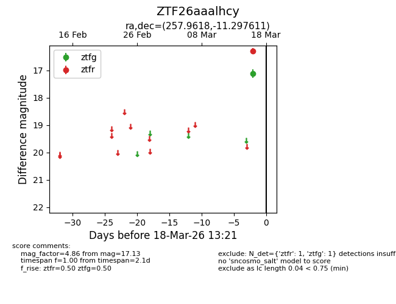
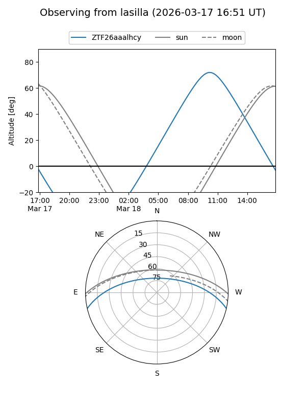
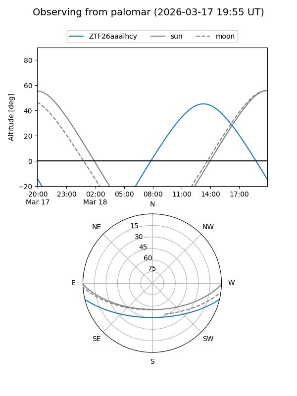
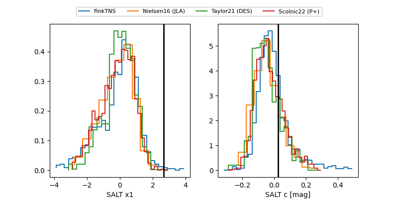

ZTF26aaalhcy
Target ZTF26aaalhcy at 2026-03-18 13:23
Aliases and brokers:
FINK: link
Lasair: link
ALeRCE: link
alt names
ZTF26aaalhcy (ztf,fink_ztf)
Coordinates:
equatorial (ra, dec) = 257.9618,-11.29761
equatorial (HMS+DMS) = 17:11:50.84,-11:17:51.40
galactic (l, b) = (10.7535,+16.14646)
Flags:
Photometry:
last ztfg=17.13, ztfr=16.30
1 ztfg, 1 ztfr detections
Lightcurve

Visibility


Additional plots
